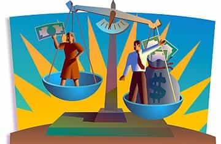
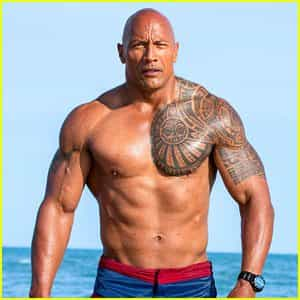
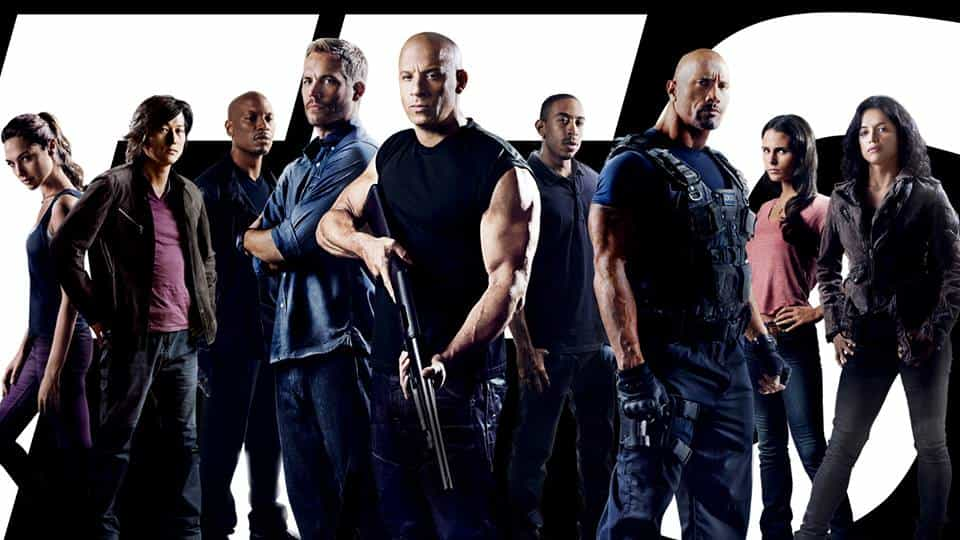

According to Forbes’ World’s Highest-Paid Actress list, Emma Stone made $26 million between June of 2016 and 2017. Jennifer Aniston came in second at $25.5 million. Emma made the bulk of this money from her Academy Award winning performance in the highly-acclaimed musical La La Land, which grossed $445 million worldwide.

Should actors make more?
It hasn’t always been so rosy at the top for Ms. Stone. Earlier this year, she was involved in some controversy over equal pay. In an Out magazine interview, she stated:
In my career so far, I’ve needed my male co-stars to take a pay cut so that I may have parity with them. And that’s something they do for me because they feel it’s what’s right and fair.
Jennifer Lawrence, last year’s biggest female earner ($46 million) has had similar trouble in her career. She found out during the Sony hacks that she was making less than her male counterparts in American Hustle. She, at least, took responsibility by blaming her own poor negotiating skills.
Should Emma Stone, or any actress, make as much as their male costars? More importantly, Should male actors be taking pay cuts in order to give their female colleagues equal pay? Let’s investigate.
The Women
Here’s a list of the remaining top 10 highest paid Hollywood actresses and what they earned between June of 2016 and 2017:
- Jennifer Lawrence ($24 million)
- Melissa McCarthy ($18 million)
- Mila Kunis ($15.5 million)
- Emma Watson and Charlize Theron ($14 million)
- Julia Roberts and Cate Blanchett ($12 million)
- Amy Adams ($11 million)
To be fair, these ladies don’t all make their money from acting. Some are producers and directors. Some get residuals from hit televisions shows, and some have cosmetics deals and other lucrative ventures.
Maybe a look at their total box office will give a hint as to why these women are so highly paid. To save tedium, I’ll show only at the top 5 (source: Box Office Mojo).
- Emma Stone ($1.5 Billion)
- Jennifer Aniston ($1.6 Billion)
- Jennifer Lawrence ($2.5 Billion)
- Melissa McCarthy ($1.1 Billion
- Mila Kunis ($1.1 Billion)
Except for Jennifer Lawrence, the list makes sense: the higher the total box office, the higher the pay. Jennifer Lawrence was the highest paid actress last year, so this metric is fairly accurate. A true outlier on this list would have been Emma Watson, whose total box office is $3.2 Billion, and she is only #6 on the list, but most of her money for this list came from the billion dollar hit Beauty and the Beast.
The Men

Of course I’m number 1
Now, let’s take a quick look at the Hollywood actors (From Forbes 2016 list. The 2017 list not published at the time of writing):
- Dwayne Johnson ($64.5 million)
- Matt Damon ($55 million)
- Tom Cruise ($53 million)
- Johnny Depp ($48 million)
- Ben Affleck ($43 million)
- Vin Diesel ($35 million)
- Robert Downey, Jr. ($33 million)
- Brad Pitt ($31.5 million)
- Adam Sandler ($30 million)
- Mark Wahlberg ($30 million)
And their total box office (Top 5)
- Dwayne Johnson ($2.8 Billion)
- Matt Damon ($3.2 Billion)
- Tom Cruise ($ 3.7 Billion)
- Johnny Depp ($ 3.5 Billion)
- Ben Affleck ($2.3 Billion)
The top men make more money for the studios, they provide more entertainment for their audiences, and their characters are more realistic.

The men, front and center, where they belong
It’s easy to name a leading male movie star: Duane Johnson, Mark Wahlberg, Vin Diesel, Tom Cruise, Robert Downey, Jr, Chris Hemsworth, Jason Statham, Daniel Craig, Channing Tatum. The names and their movies just roll off your tongue. Now quickly name some female leads: That chick in the Edge of Tomorrow movie with Tom Cruise, the Hispanic girl in the Fast movies, Tom Cruise’s ex-wife in Logan Lucky (is she even a lead?). The blonde chick in Atomic Blonde.
I’m being facetious, of course, but the male leads are much easier to name because we go to see the movies because of the male leads. The box office numbers don’t support moviegoers watching movies with female leads, with few exceptions.
According to the Motion Picture Association of America, the biggest demographic of moviegoers in 2016 was 18-24 year olds. Are they looking to see a woman almost as old as their moms beat up bad guys in Blonde ($48 million domestic) or a woman over twice their age play an alpha female TV producer in Money Monster ($41 million domestic)? Nope. They’d rather see week 2 of Captain America: Civil War ($408 million domestic).
The types of roles played compared to the box office numbers are telling, as well. For both sexes, I’m going to remove super hero movies, because not only do they both do well, but they are unrealistic. If I left them in, the men would still win, so let’s continue.
Let’s look at the biggest money making movies for the top five men and women. Emma Stone played a waitress in La La Land, a traditional female role. Jennifer Aniston’s biggest movie was Bruce Almighty, a Jim Carrey leading role, in which she played a supporting role as a housewife. Jennifer Lawrence? Hunger Games: Catching Fire. Outlier. Female warrior superhero type. Melissa McCarthy scored big in Bridesmaids in a traditional female role. Finally, Mila Kunis’ biggest hit was Oz the Great and Powerful, in which she played a heavy as the Wicked Witch of the West (but not the lead).
What about the men? Duane Johnson played one of the leads in Fate of the Furious, Matt Damon played the lead in The Martian, Tom Cruise played the lead in War of the Worlds, Johnny Depp played the lead in Pirates of the Caribbean: Dead Man’s Chest, and Ben Affleck played the lead in Batman v Superman: Dawn of Justice.
So, the top women are playing supporting roles as traditional female characters in hit movies with male leads, for the most part, and the top men are playing leading roles in their own hit movies. This is actually how life should work, and the 18-24 year old audience supports that.
If you were a red pill male actor, instead of a beta white knight, would you take a voluntary pay cut, reducing your family’s lifestyle, so that a female who wouldn’t be in a leading role and therefore wouldn’t be working as hard as you, who didn’t have the audience draw that you have, so that her portion of the box office is smaller, who fewer people want to see, can get the same paycheck as you? Of course not. You would tell her to get a better agent.
Conclusion
The answer, obviously, to the headlining question is “no.” Women actresses do not deserve the same pay as their far more successful male counterparts. It’s not even close. Fortunately, the movie industry recognizes this and rewards the performers accordingly. If a male doesn’t bring in the box office numbers, he will make less money and will eventually be out of work. That’s show biz, folks.
It’s too bad that other industries have been beaten down and cucked by the liberal SJWs to the point where society has been gaslighted by the misconception that women make 76 cents for every dollar men make. Intelligent studies have shown this time and again to be untrue.
I fear that if actresses keep whining about gender equality and parity long enough, the motion picture industry will eventually buckle and we’ll be paying double for our movie tickets to see women do less work in supporting roles while making just as much as their box office generating male leading counterparts.
Read More: The Reason Female Actors Get Paid Less That Nobody Wants To Talk About